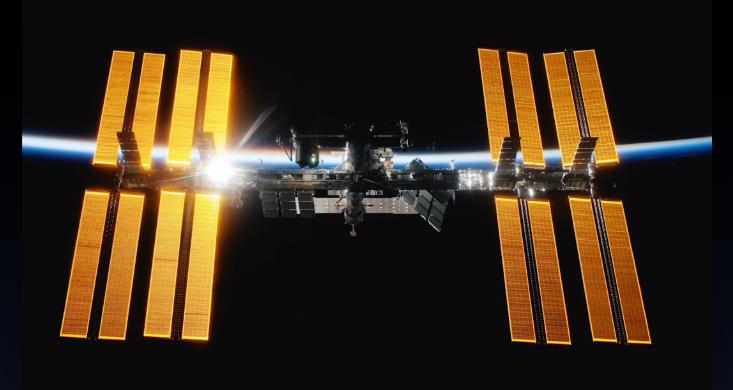
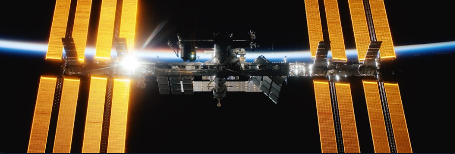
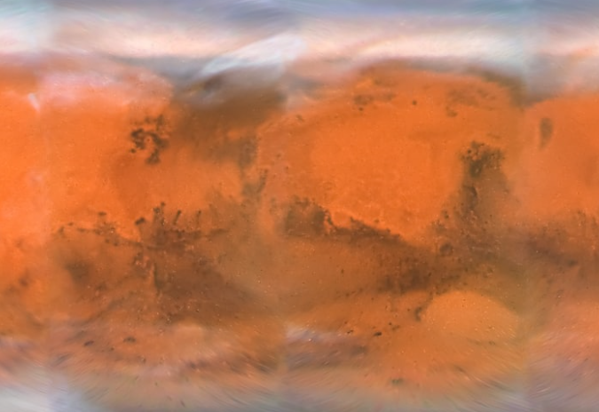

Human Exploration in Space
Pushing the boundaries of what's possible, one mission at a time
The Final Frontier
For thousands of years, humans looked up at the stars and wondered what lay beyond.
In the span of just a few decades, we've gone from the first tentative steps into space to establishing a
permanent presence in orbit and planning missions to Mars.
Human space exploration represents one of humanity's greatest achievements, combining courage,
innovation, and an insatiable curiosity about our place in the cosmos.

Historic Milestones
Yuri Gagarin becomes the first human to journey into outer space, orbiting
Earth aboard Vostok 1.
Neil Armstrong and Buzz Aldrin become the first humans to walk on the Moon during
the Apollo 11 mission.
Construction begins on the ISS, a collaborative project involving multiple
nations working together in space.


The Red Planet has captured our imagination for decades, and now
we're closer than ever to making human missions to Mars a reality.
- 2030s: First crewed missions planned to Mars orbit
- 2040s: Establishing permanent Mars bases
- Beyond: Terraform and colonize Mars
Current Missions
Continuously inhabited since 2000,
serving as a laboratory for scientific research and a testbed for future deep space missions.
NASA's mission to return humans to the Moon and establish sustainable lunar
exploration by the end of the decade.
Private companies like SpaceX and Blue Origin are developing vehicles for
commercial space tourism and cargo missions.